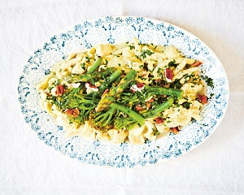

Les pâtes orecchiette au pesto recette
Ingrédients :
- 150 g de noix de pécan
- 250 g de broccolinis
- 1 petit bouquet de persil plat frais
- 1 gros oignon blanc, finement haché
- 150 ml d’huile d’olive vierge extra
- 500 g d’orecchiette
- 250 g de pointes d’asperge
- 150 g de parmesan
- 2 gousses d’ail épluchées
- Sel et poivre
Préparation :
- Faire chauffer 2 cuillerées à soupe d’huile et les gousses d’ail entières dans une poêle antiadhésive. Faire revenir l’oignon, les asperges et les broccolinis 10 minutes, à feu moyen.
- Porter de l’eau salée à ébullition et faire cuire les pâtes al dente.
- Pendant ce temps, préparer le pesto. Mixer au robot le parmesan, l’ail et l’oignon rôtis, l’huile restante, deux tiers des broccolinis, des asperges, des noix de pécan et du persil. Saler et poivrer. En égouttant les pâtes, mettre de côté 2 ou 3 louches d’eau de cuisson, à mélanger au pesto pour le rendre plus crémeux.